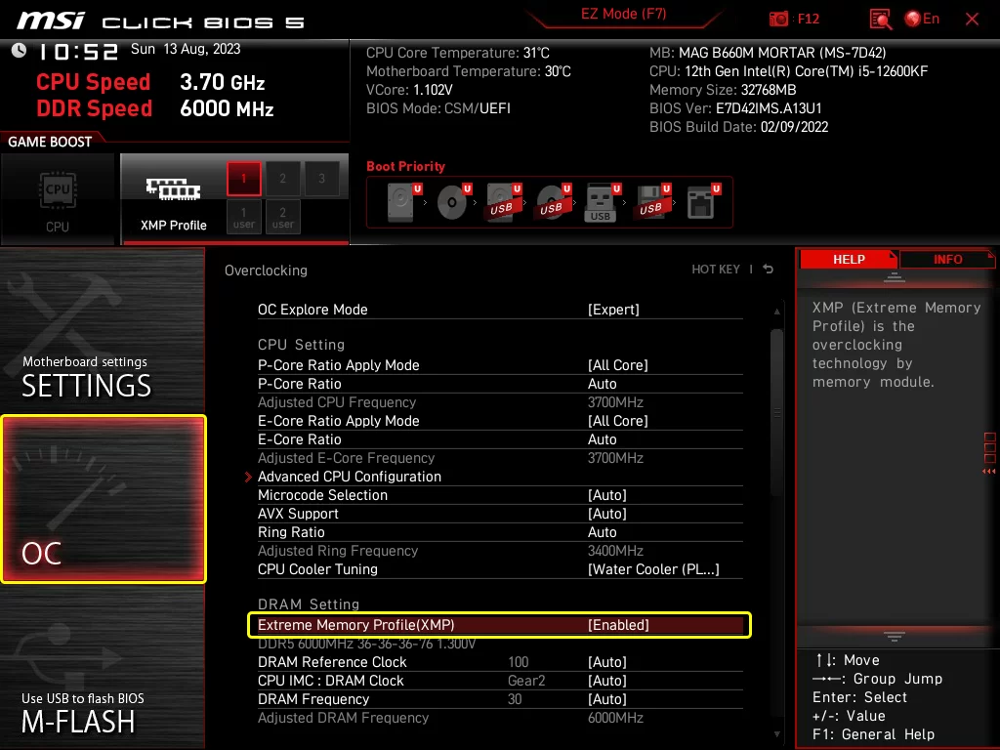

Contents
PC Specs
BIOS Settings
Ryzen CPU 7000 series Curve Optimizer
Applications Used for Optimization
Chris Titus Tech (CTT) Windows Optimization Tool
Other PC Tweaks Guides
Windows 11 Mega Optimization Guide
How to Clear All Cache in Windows 11
Gaming Related Tweaks
General Purpose Applications
PC Specs
Below is the specification of the rig used in this guide
- CPU: Ryzen 5 7600x
- GPU: Sapphire Pulse RX6700XT 12GB
- RAM: Corsair Vengeance 32GB(16x2) 6000Mhz 36CL
- Motherboard: MSI B650M-P
- PSU: 1STPlayer Steampunk 850W Gold Full Modular
- SSD: 1TB Crucial P5 Plus
- Cooler: Thermalright PS120 SE 7
BIOS Settings
1. Ryzen CPU 7000 series Curve Optimizer
To lower CPU temperature and reduce power.
2. XMP/EXPO
Improves RAM speed and timing based on the manufacturer's settings. Improves gaming performance.
NOTE:Photo used only as an example to show where in MSI BIOS settings is the XMP
3. Memory Context Restore
Helps a lot to improve slow boot time specially on Ryzen 7000 CPUs.
4. Enable Smart Access Memory
Allows the GPU to access more memory, enhancing Frames per Second (FPS) on most games.
Clean Windows Installation
A fresh install of Windows allows users to reduce the bloatware and unnecessary services running in the background.
Applications used for Optimizing
1. Chris Titus Tech (CTT) Windows Optimization Tool
A free windows utility tool to help tweak and optimize PC for better performance.
2. Pegasun System Utilities
Another free utility tool same as CTT utilities. It has many options, from optimizing services to cleaning your PC of unnecessary junk.
Other PC Tweaks Guides
1. Windows 11 MEGA OPTIMIZATION Guide
A guide to help you have a better, faster and more responsive windows experience.
2. How to CLEAR All Cache in Windows 11
Helps delete junk and unnecessary data to save memory space.
Gaming Related Tweaks
1. Disable/Enable MPO
2. Disable Core Isolation
3. More Power Plan Options
4. Update Chipset Drivers
5. Update GPU Drivers
Update your GPU drivers (NVIDIA or AMD) by going to their official website and downloading the latest driver for your GPU
Links for drivers Official websites
General Purpose Applications
1. BC Uninstaller
This utility tool can be installed using CTT Utilities. This is for uninstalling most apps that cannot be uninstalled using conventional means.

2. Compactor by Freaky
Used to compress game data without any effects on the games performance. Saves precious space on your memory.
Link for Compactor
3. MSI AfterBurner
MSI AfterBurner is used for overclocking and undervolting GPUs. The method and values used varies for each GPU.
This application also installs RivaTuner Statistics Server (RTSS). RTSS allows you to set the frame limit for each game for better frametime.
Link for MSI AfterBurner

4. Superposition Benchmark
Used to benchmark GPU specially if you are overclocking/undervolting.
Link for Superposition Benchmark

5. Everything Search App by Voidtools
This search application can be installed using the CTT Utilities. This application greatly enhances searching capabilities for windows. Most useful when searching specific files.